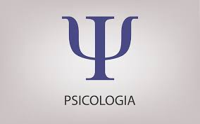

Ana Helena de Araujo Trindade
psicóloga infantil
Minhas metas para o futuro são: passar no ENEM de primeira para uma federal,envoluir cada vez mais de forma
pessoal obter mais conhenhimento sobre o Budismo e ser uma aluna mais focada.
Gostaria de ja estar trabalalhando em uma clinica , especializada em tratamento psicólogico pra
crianças,ajudando elas a se entenderem é que eu esteja ajudando tambem as outras crinças que nao tem
as mesmas condiçoes 💻📖🖋️📈
- Focar nas materias da escola ,para passar pelos 3 anos de formas tranquilia e com conhecimento
- Estudar muito para o ENEM
- focar mais em todos essses meus objetivos para que eles sejam realizados
- Quando eu quero muito algo, eu geralmente comsigo
- Acredito que a educaçao é o unico caminho
- Amo ajudar as pessoas de todas as formas possíveis e gosto de ver o bem estar delas

pagina proficional I
inspiraçao